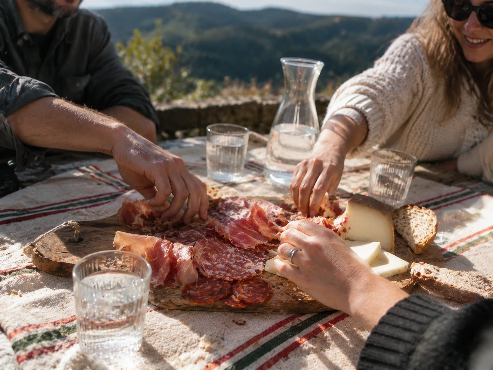

Jambon de Kintoa AOP, porc basque Pie Noir élevé en plein air aux Aldudes. Une histoire de famille depuis 1987.
Pour votre santé, évitez de manger trop gras, trop sucré, trop salé. www.mangerbouger.fr